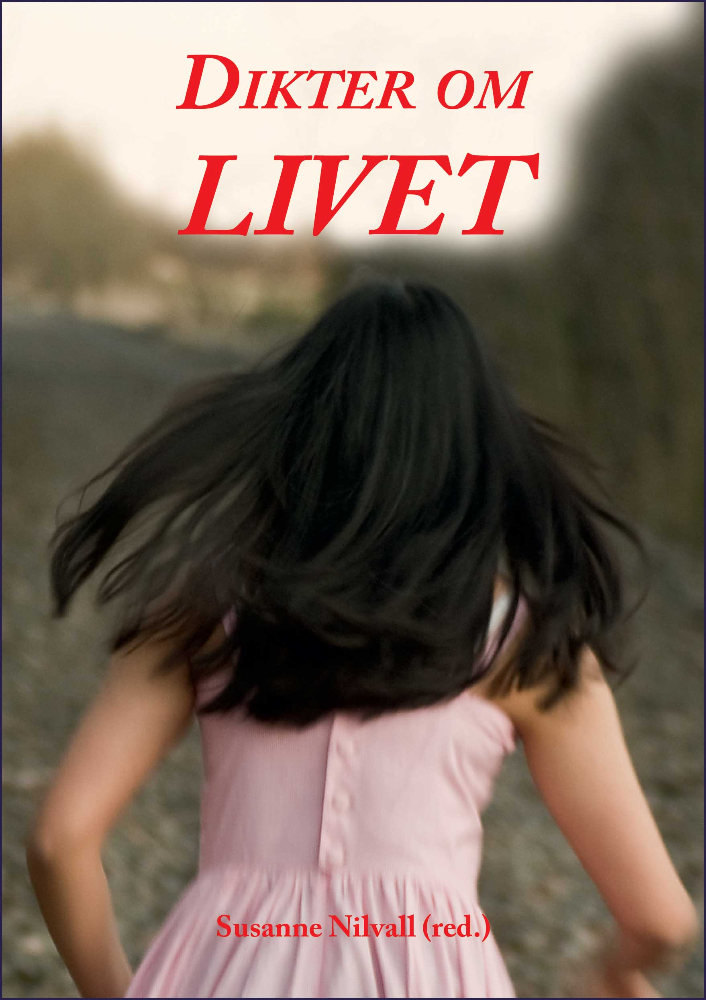

Dikter om livet
Susanne Nilvall (red.)

Dikter om livet är en diktsamling skriven av elever på Tingbergsskolan i Lödöse. Den deltog i Syneidos Kvalitetslitteraturs poesitävling för västsvenska skolungdomar till vilken mängder av fina dikter blev insända. Omröstningen skedde på internet och alla var välkomna att rösta. När tävlingen var över stod det klart att Dikter om livet efter en spännande final hade tagit andraplaceringen. Några kommentarer från internet:
”Helt otroligt bra”
”Underbara dikter”
Eleverna vill i dikterna förmedla sina tankar om livets gång såsom när höstens grå färger lägger sig över sommarens grönska, glädjen över vårens ankomst, rädslan över att bli gammal, känslorna kring att duga som människa, vikten av att omge sig med bra vänner, universum oändlighet, kärlekens smärta och glädje.
Läs och njut av ung poesikonst.
Beställ direkt från oss, pris 100 kr
”Helt otroligt bra”
”Underbara dikter”
Eleverna vill i dikterna förmedla sina tankar om livets gång såsom när höstens grå färger lägger sig över sommarens grönska, glädjen över vårens ankomst, rädslan över att bli gammal, känslorna kring att duga som människa, vikten av att omge sig med bra vänner, universum oändlighet, kärlekens smärta och glädje.
Läs och njut av ung poesikonst.
Beställ direkt från oss, pris 100 kr